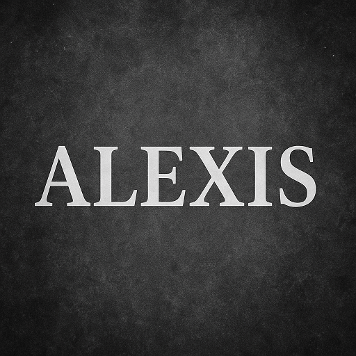

BTS SIO · Option SLAM · 2024–2026
Étudiant développeur – BTS SIO SLAM
Passionné par les nouvelles technologies et le développement, je suis à la recherche d'une alternance.
Voir mes projets Me contacter
Étudiant en 2ème année de BTS SIO option SLAM, je me forme au développement d'applications web et logicielles. Curieux et rigoureux, j'aime concevoir des solutions techniques qui répondent à de vrais besoins métier.
En stage chez L'APEEAC de valenciennes, j'ai pu travailler sur un projets concrets et renforcer mes compétences.
Intégration web, responsive design.
Fetch API, logique client, conditions, fonctions.
Backend, MVC, routes, Frontend, dynamique.
Requêtes, procédures stockées, triggers, MCD (Modèle Conceptuel de Données).
POO (Programmation Orientée Objet), algorithmes, scripts d'automatisation, ORM.
Scripts, automatisation, logique, conditions, fonctions, manipulation de données, fichiers (CSV/JSON).
Versioning, Push, branches, pull requests.
OVH, gestion de serveurs, déploiement d'applications web, FTP FileZilla.
Visual Studio Code, Visual Studio 2022 (C#).
Description: réaliser un site internet dynamique avec Laravel, Panel administrateur, hébergement OVH, base de données MySQL.
Lire la suite →
Description: Création d'un jeu de société web interactif pour la formation technique des collaborateurs chez Onet.
Html, css, JavaScript.
GitHub
AlexisVerplaetse